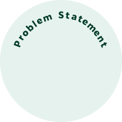

TL;DR
Half of Americans follow specific diets, yet the Starbucks app lacks features to support dietary preferences. Our solution allows users to set their preferences, providing tailored recommendations throughout the menu and making customization easier and more intuitive.
Problem
According to a 2023 study by the International Food Information Council, 5 out of 10 Americans follow a specific eating pattern or diet.
For many, maintaining these dietary preferences comes with daily challenges—whether it’s grocery shopping, dining out, or grabbing their daily caffeine fix.
The Starbucks app, consistently ranked among the top 10 Food and Drink apps on the App Store, is celebrated for its convenience, especially when it comes to ordering customized drinks ahead of time.
However, despite offering extensive customization options, the app provides little guidance and lacks features to set or save dietary preferences.
Solution
We addressed dietary uncertainty with a Taste Preferences Setting, a personalized 'For You' menu, and enhanced product pages with dietary conflict warnings, creating a more tailored and confident ordering experience.
Impact
Our solution empowers users to make confident, informed choices by aligning their dietary needs with tailored recommendations. This enhances user satisfaction, reduces decision fatigue, and positions Starbucks as a more inclusive and customer-focused brand.

Through our initial interviews and desk research, we narrowed in on one opportunity:
Customers struggle to accommodate their dietary preferences, leading to uncertainty about their orders and increased cognitive load.
Our goal is to enhance the Starbucks app by enabling users to specify dietary preferences, easily customize their orders, and receive tailored recommendations, ensuring an intuitive and confidence-boosting experience.